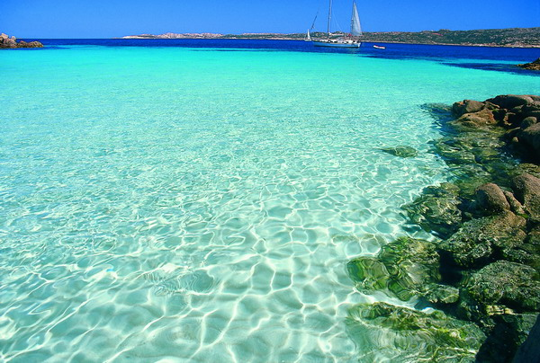

Attività
I parchi naturali italiani offrono esperienze uniche per esplorare paesaggi straordinari: trekking panoramici, birdwatching, vulcani attivi e sentieri immersi nella biodiversità di monti e foreste.
Parchi D'Italia
I parchi naturali italiani offrono esperienze uniche per esplorare paesaggi straordinari: trekking panoramici, birdwatching, vulcani attivi e sentieri immersi nella biodiversità di monti e foreste.
I parchi nazionali italiani offrono un’ampia gamma di opportunità per vivere momenti a contatto con la natura, integrando aspetti ricreativi, educativi e culturali. Escursioni e trekking rappresentano spesso la prima scelta: molti itinerari sono mappati e ben segnalati, con diversi gradi di difficoltà, così da soddisfare sia gli appassionati di lunghe camminate sui sentieri alpini o appenninici, sia chi cerca percorsi più dolci fra boschi secolari o tratti costieri panoramici. Lungo il cammino, non è raro imbattersi in centri visita e punti informativi dove guide specializzate forniscono dettagli su flora, fauna e geologia dell’area.
Per coloro che desiderano un approccio più strutturato, visite guidate e laboratori didattici consentono di approfondire tematiche come la conservazione degli ecosistemi, la storia geologica delle montagne o la tutela di specie in pericolo. Queste attività sono spesso rivolte a scuole, famiglie o gruppi organizzati, con possibilità di sperimentare laboratori di educazione ambientale sul campo o workshop pratici (ad esempio, sul riconoscimento delle tracce animali o sull’orientamento in montagna).
Grazie alla varietà morfologica del territorio, numerosi parchi si prestano a sport all’aria aperta: in zone montuose si praticano l’arrampicata, il downhill in mountain bike o lo sci di fondo nelle stagioni fredde, mentre le aree costiere e lacustri favoriscono kayak, canoa, snorkeling e immersioni. Molti parchi dispongono di punti panoramici particolarmente indicati per il birdwatching, dove, con l’ausilio di capanni o torri d’avvistamento, si possono osservare specie migratorie e rapaci di grande fascino.
Anche la dimensione culturale e gastronomica è fondamentale. Molti parchi ospitano eventi e manifestazioni dedicati a prodotti tipici (vino, formaggi, miele, olio) e antiche tradizioni. Infine, per un’immersione completa, alcuni itinerari integrano la visita a siti archeologici o borghi storici, testimoniando l’equilibrio millenario tra l’uomo e l’ambiente. In questo modo, chi sceglie di esplorare i parchi nazionali italiani può trovare esperienze su misura, imparare a conoscere e rispettare la natura, nonché scoprire la ricchezza culturale dei territori protetti.

° Escursioni e Trekking
1. Parco Nazionale del Gran Paradiso: Sentieri alpini che attraversano ghiacciai e pascoli, ideali per il trekking d’alta quota.
2. Parco Nazionale d’Abruzzo, Lazio e Molise: Faggete vetuste, percorsi adatti a tutti i livelli e possibilità di avvistare fauna selvatica.
3. Parco Nazionale del Pollino: Itinerari tra vette selvagge, gole e i caratteristici pini loricati.
4. Parco Nazionale delle Dolomiti Bellunesi: Ampia rete di sentieri con panorami spettacolari e rifugi alpini.
5. Parco Nazionale della Sila: Boschi di faggio e pino laricio, percorsi immersi nella natura dell’altopiano.
6. Parco Nazionale delle Foreste Casentinesi, Monte Falterona e Campigna: Foreste secolari, eremi e abbazie raggiungibili a piedi.

° Visite Guidate e Laboratori Didattizi
1. Parco Nazionale d’Abruzzo, Lazio e Molise: Centri visita per conoscere l’orso bruno marsicano e progetti di educazione ambientale.
2. Parco Nazionale del Gran Paradiso: Guide che illustrano la storia della protezione dello stambecco e l’ecologia alpina.
3. Parco Nazionale delle Foreste Casentinesi: Percorsi guidati per scoprire la biodiversità forestale e l’importanza delle faggete vetuste.
4. Parco Nazionale della Sila: Laboratori su flora, fauna e antiche tradizioni agro-pastorali (es. transumanza).
5. Parco Nazionale del Vesuvio: Visite geologiche alla scoperta del vulcano e della sua storia eruttiva.
(In quasi tutti i parchi è possibile prenotare visite guidate e percorsi didattici su richiesta.)

° Sport all’Aria Aperta
Arrampicata:
1. Parco Nazionale del Pollino: Pareti rocciose ideali per climber esperti.
2. Parco Nazionale delle Dolomiti Bellunesi: Falesie di diversa difficoltà e vie ferrate.
Mountain Bike:
1. Parco Nazionale della Sila: Percorsi sterrati tra boschi e altopiani.
2. Parco Nazionale d’Abruzzo, Lazio e Molise: Sentieri misti fra faggete e borghi.
Canoa / Kayak / Snorkeling:
1. Parco Nazionale delle Cinque Terre: Tratti costieri accessibili via mare, piccole cale.
2. Parco Nazionale dell’Arcipelago Toscano: Escursioni in kayak tra calette e fondali ricchi di vita marina.
3. Parco Nazionale dell’Arcipelago di La Maddalena: Acque cristalline ideali per immersioni e snorkeling.
Sci e Sport Invernali:
1. Parco Nazionale della Sila: Sci di fondo e ciaspolate in altopiano.
2. Parco Nazionale d’Abruzzo, Lazio e Molise: Possibilità di sci di fondo e ciaspolate in aree boschive.

° Birdwatching
1. Parco Nazionale d’Abruzzo, Lazio e Molise: Rapaci come l’aquila reale, e possibilità di avvistare camosci (non volatili, ma di notevole interesse).
2. Parco Nazionale delle Foreste Casentinesi: Varie specie di uccelli che nidificano in foresta, tra cui picchi e rapaci diurni.
3. Parco Nazionale dell’Arcipelago Toscano: Uccelli marini e migratori, compresi gabbiano corso e falco pellegrino sulle falesie.
4. Parco Nazionale del Cilento, Vallo di Diano e Alburni: Zone umide interne e tratte costiere frequentate da uccelli migratori.

° Siti Archeologici e Borghi Storici
1. Parco Nazionale delle Cinque Terre: I caratteristici borghi marinari (Riomaggiore, Manarola, Corniglia, Vernazza, Monterosso).
2. Parco Nazionale del Vesuvio: Vicinanza a siti archeologici come Pompei ed Ercolano (extraparco, ma strettamente correlati).
3. Parco Nazionale dell’Arcipelago Toscano: Isola d’Elba con le residenze napoleoniche, resti romani a Giannutri.
4. Parco Nazionale del Cilento, Vallo di Diano e Alburni: Vicinanza ai siti di Paestum e Velia, ricchi di testimonianze della Magna Grecia.
5. Parco dell’Etna: Paesini etnei con centri storici in pietra lavica, chiese e musei dedicati all’attività vulcanica.